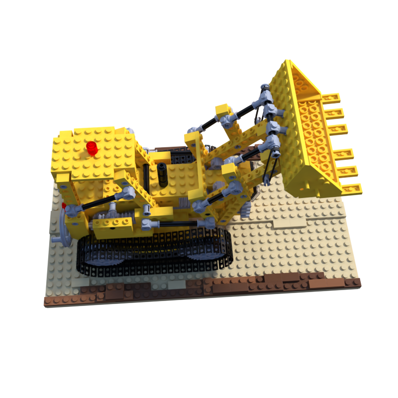
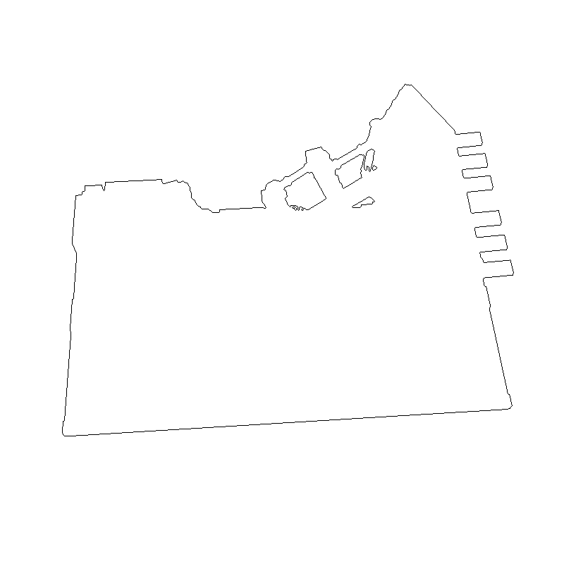
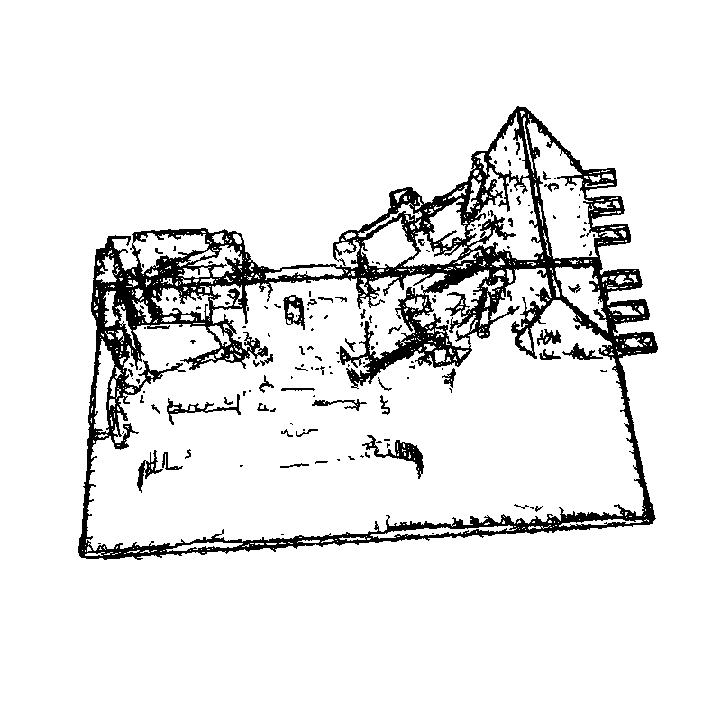
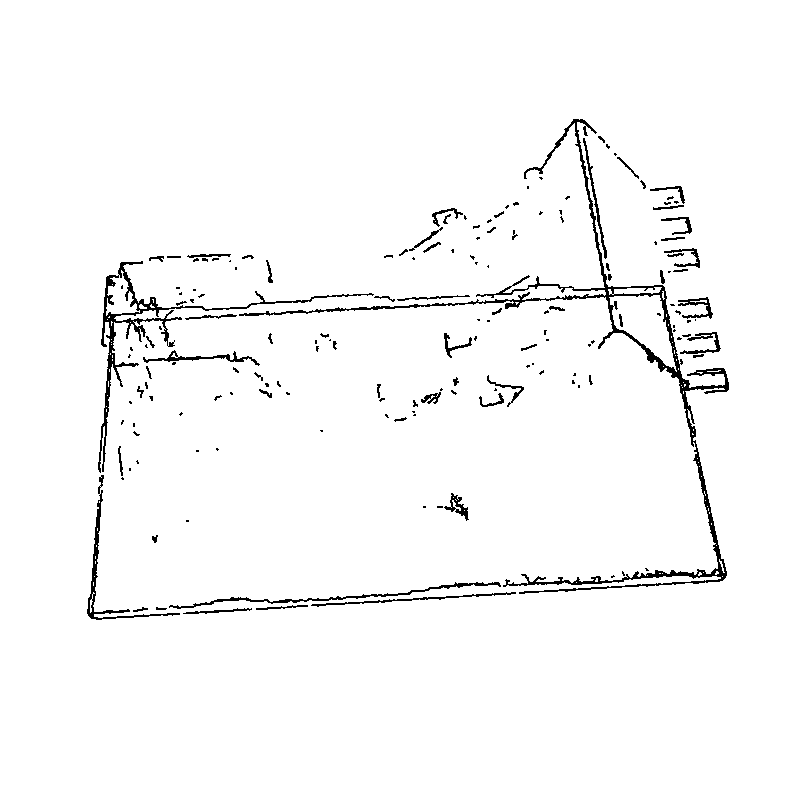
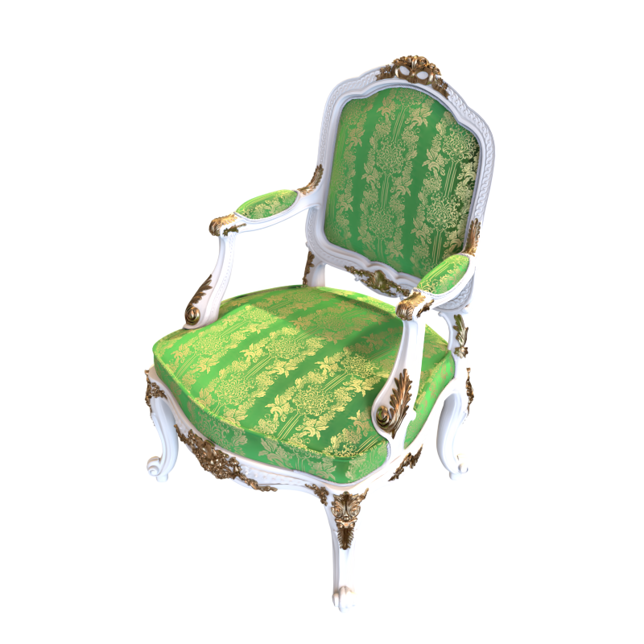
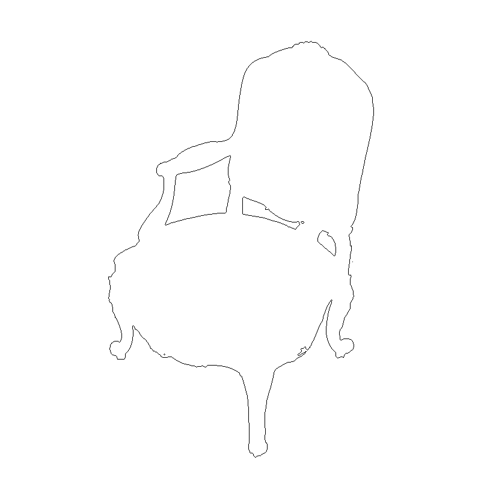
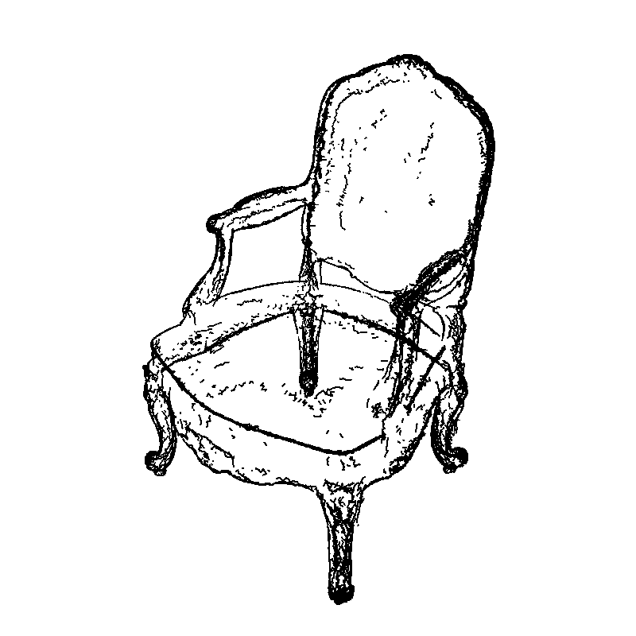
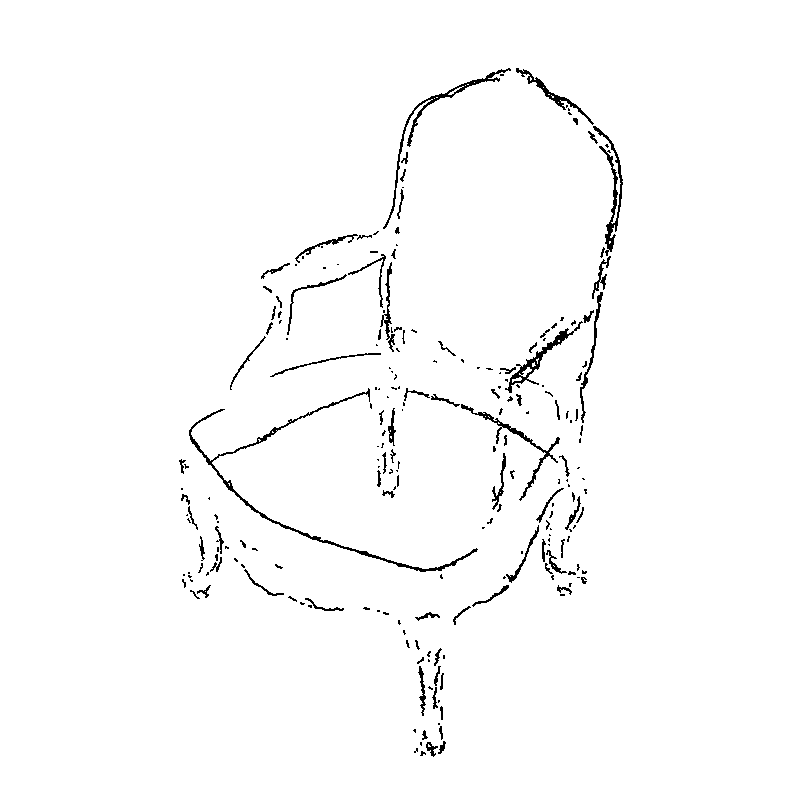

PARTIAL / NO_GO 完整轮廓恢复。 两个真实固定线模型；多源融合与去重已执行。仍有断线、缺线、重叠和后方线，绝不以退出成功代替视觉GO。
XYZ、拓扑和世界线宽已冻结。三臂共用radius；实体tube自身z-buffer，相对原GS为x-ray。
离线3D旋转查看器（默认fused，可切24source） · fused GLB · tube OBJ · centerline OBJ · 控制点/路径/来源




8reserved完整全图板 · 预览 · 最差宽尾/单管隔离 · 全部33帧
历史曝光的33相机短弧；无删帧、无几何更新。所有孔洞/遮挡/重叠失败保留。
离线3D旋转查看器（默认fused，可切24source） · fused GLB · tube OBJ · centerline OBJ · 控制点/路径/来源




8reserved完整全图板 · 预览 · 最差宽尾/单管隔离 · 全部33帧
历史曝光的33相机短弧；无删帧、无几何更新。所有孔洞/遮挡/重叠失败保留。